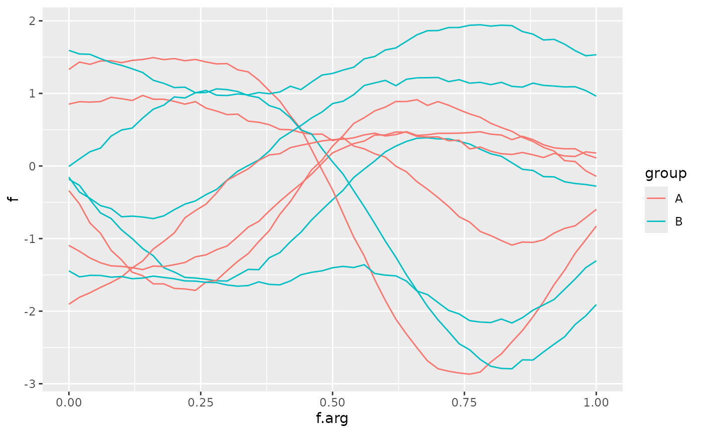
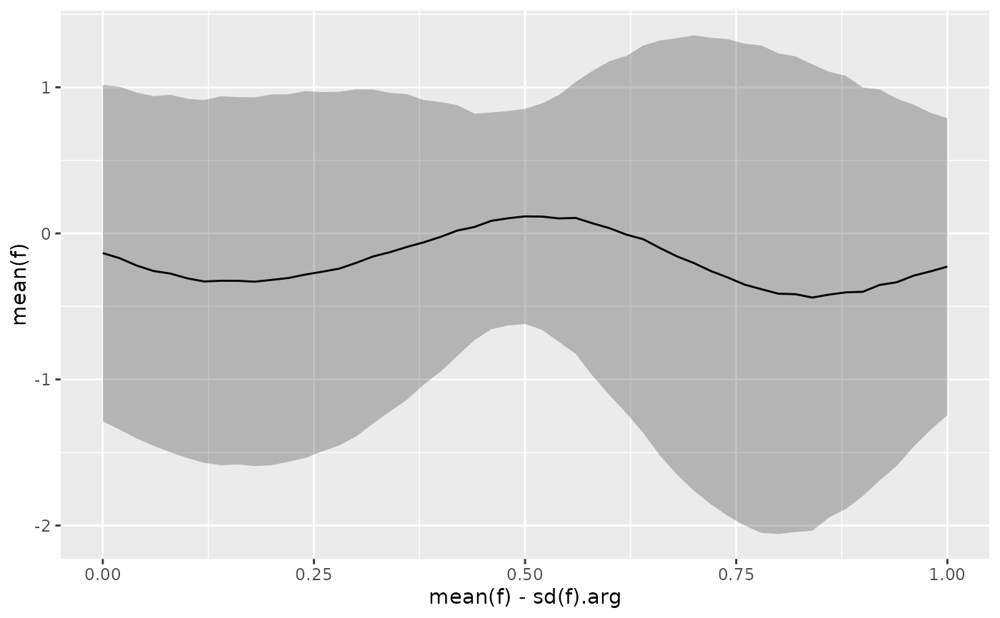

tf_ggplot() creates a ggplot object that can handle tf (functional data) aesthetics.
It works similarly to ggplot() but automatically transforms tf objects into
long-format data suitable for standard ggplot2 geoms.
Usage
tf_ggplot(data = NULL, mapping = aes(), ..., arg = NULL, interpolate = TRUE)Arguments
- data
Default dataset to use for plot. If not provided, must be supplied in each layer added to the plot.
- mapping
Default list of aesthetic mappings to use for plot. Can include tf-specific aesthetics like
tf,tf_x,tf_y,tf_ymin,tf_ymax.- ...
Other arguments passed to ggplot2 functions.
- arg
Optional. Evaluation grid for tf objects. A numeric vector of arg values, or a single integer specifying the desired grid length (resolved to an equidistant grid over the tf domain). If
NULL(default), uses the natural grid of the tf objects.- interpolate
Logical. Should tf objects be interpolated to the evaluation grid? Defaults to TRUE.
Details
tf_ggplot supports the following tf-specific aesthetics:
tf: Maps atfobject toyaesthetic (shorthand fortf_y)tf_x: Maps atfobject toxaesthetictf_y: Maps atfobject toyaesthetictf_ymin: Maps a tf object to ymin aesthetic (for ribbons)tf_ymax: Maps a tf object to ymax aesthetic (for ribbons)
When tf aesthetics are used, the data is automatically transformed:
tf objects are evaluated on a common grid
Each function becomes multiple rows (one per evaluation point)
Group identifiers are created to maintain function identity
Non-tf columns are replicated appropriately
Examples
# Basic usage
data <- data.frame(
id = 1:10,
group = sample(c("A", "B"), 10, replace = TRUE)
)
data$f <- tf_rgp(10)
# Method 1: tf aesthetic in constructor
tf_ggplot(data, ggplot2::aes(tf = f, color = group)) + ggplot2::geom_line()

# Method 2: tf aesthetic in geom (equivalent)
tf_ggplot(data) + ggplot2::geom_line(ggplot2::aes(tf = f, color = group))
 # Confidence bands
tf_ggplot(data) +
ggplot2::geom_ribbon(
ggplot2::aes(tf_ymin = mean(f) - sd(f), tf_ymax = mean(f) + sd(f)),
alpha = 0.3
) +
ggplot2::geom_line(ggplot2::aes(tf = mean(f)))
# Confidence bands
tf_ggplot(data) +
ggplot2::geom_ribbon(
ggplot2::aes(tf_ymin = mean(f) - sd(f), tf_ymax = mean(f) + sd(f)),
alpha = 0.3
) +
ggplot2::geom_line(ggplot2::aes(tf = mean(f)))
